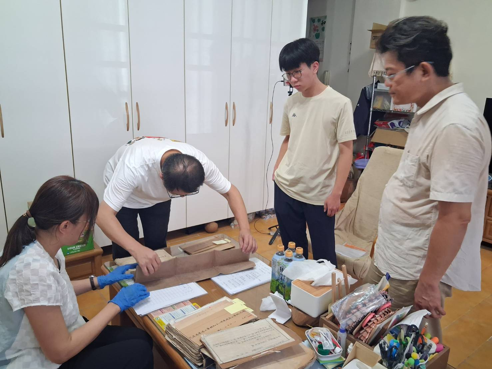
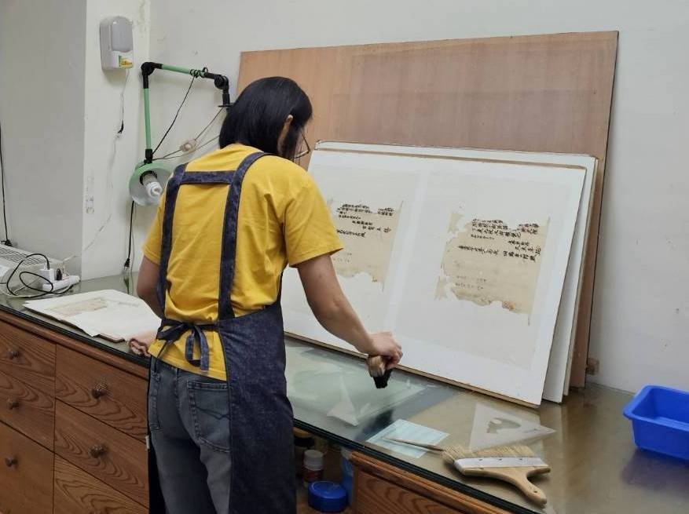
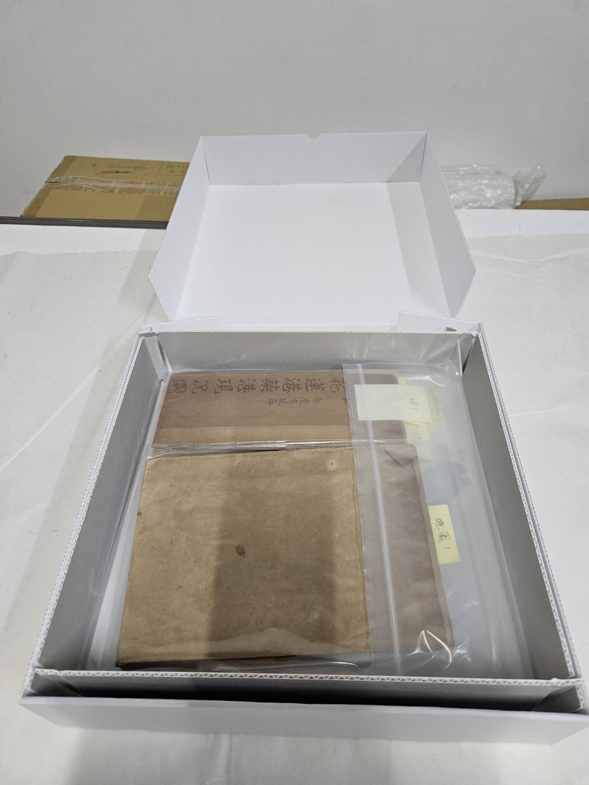

花蓮港的百年記憶與重構
花蓮港位於花蓮市東北角，是臺灣東部唯一的國際商港。建於日治時期的1931年，並於1939年正式開港，經人工挖掘並由東、西防波堤環抱而成，目前港內設有25座碼頭，主要負責砂石、水泥、大理石等東部重要大宗貨物的海運，也是臺灣極具指標性的觀光與郵輪港口。
花蓮港於時任花蓮港廳長江口良三郎的爭取下，自同年度起8年之間，以總經費742萬日圓開始修築花蓮港街米崙（現名美崙）的商港，分七年工期興建，不過後來又因預算問題而延期兩年，最後第一期工程於1939年10月2日正式開港，完成了三座碼頭可供3,000噸級貨輪停泊。工程採「陸掘式港灣」設計，期間總共挖出178萬立方公尺的土方，是日本史上第一座現代化陸掘式港灣。其修築歷程與東臺灣的經濟發展密不可分，日治時期為了突破台灣東西陸上交通瓶頸、滿足東部產業（如砂糖、木材、鋁業）等物資輸出及周邊工業發展及軍事需要，該港經歷了四次擴建以滿足不同時代的需求。
早期的花蓮溪口舊港於南濱附近，所有的大船必須停泊在數公里外海，再以小型舢舨接駁上岸，容易受到風浪、水患與泥沙淤積的威脅，為了提供大型輪船安全的避風與停泊空間，總督府選定北側的米崙（美崙）海岸，採取人工開鑿的方式興建新港。
1920年代由東部民間與企業歷經多年請願，終於爭取官方財政支持建港，此後花蓮港不僅是東臺灣的海上交通與貿易門戶，近年來更積極發展觀光休閒，融合了貨運樞紐與遊憩魅力，成為遊客造訪花蓮時的熱門景點。
此外，隊長家中珍藏日治時期由日人留下之花蓮港文獻資料，會同國史館台灣文獻館協助辦理歷史文物認定。因此批資料年代久遠，部分保存狀況並不佳，希望藉此機會留下數位資料。部分圖資經初步詢問，港務公司及國史館台灣文獻館亦無留存，故希望將相關資料掃瞄建立電子檔後將由相關單位留存。



教育推廣與互動策展區
我們致力於深化大眾對花蓮港歷史的認知。在此區塊，您可以觀看團隊製作的專題影像，或是透過互動遊戲測試您的歷史知識，最後請別忘了填寫回饋表單！
影音導覽：走過百年花蓮港
點擊觀看團隊精心製作的導覽影片，與我們一起見證大時代下的東部港灣發展史。
歷史知識隨堂考
Q1: 歷經七年多工期，花蓮港是在哪一年正式完工開港的？
Q2: 花蓮港最初的工程設計，是日本史上第一座哪一種特殊類型的港灣？
Q3: 早期花蓮溪口舊港時期，大船停泊在外海後，需依靠什麼方式接駁上岸？
Q4: 花蓮港的築港工程是在哪一位時任花蓮港廳長的極力爭取下開始修築的？
Q5: 日治時期花蓮港的建港總經費大約是多少？
觀展回饋與學習單
為了確認本次策展的學習效益與優化未來展示，請撥冗協助我們填寫以下表單：